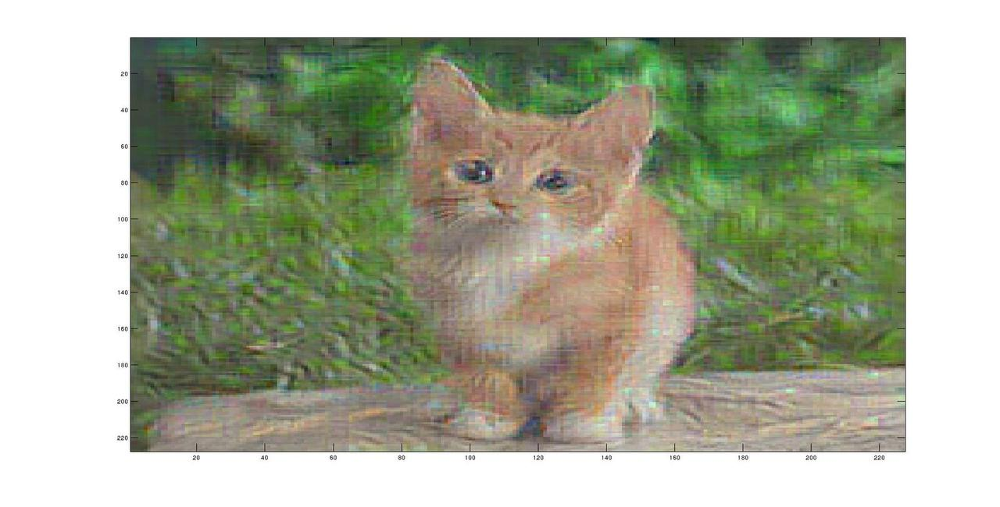

I am interested in a recent blog post by Google that describes the use of nn
to make art.
I am particularly interested in one technique:
'In this case we simply feed the network an arbitrary image or photo and let
the network analyze the picture. We then pick a layer and ask the network to
enhance whatever it detected. Each layer of the network deals with features
at a different level of abstraction, so the complexity of features we
generate depends on which layer we choose to enhance. For example, lower
layers tend to produce strokes or simple ornament-like patterns, because
those layers are sensitive to basic features such as edges and their
orientations.'
The post is http://googleresearch.blogspot.co.uk/2015/06/inceptionism-going-
deeper-into-neural.html?m=1.
My question : the post describes this as a 'simple' case--is there an
open-source implementation of a nn that could be used for this purpose in a
relatively plug-and-play process? For just the technique described, does the
network need to be trained?
No doubt for other techniques mentioned in the paper one needs a network
already trained on a large number of images, but for the one I've described is
there already some kind of open-source network layer visualization package?
Answer
UPD: Google posted more detail instructions how they implemented it:
https://github.com/google/deepdream/blob/master/dream.ipynb
There's also another project: https://317070.github.io/Dream/
If you read 1,[2],[3],[4] from your link, you'll see that they used Caffe.
This framework already contains the trained networks to play with. You don't
need to train anything manually, just download the models using .sh scripts in
the models/ folder.
You want "plug-and-play process", it's not so easy because besides the
framework, we need the code of the scripts they used and, probably, patch
Caffe. I tried to make something using their description. Caffe has Python and
Matlab interface but there's more in its internals.
The text below describes my thoughts on how it could be possibly implemented.
I'm not sure about my words so it's more like an invitation to research with
me than the "plug-and-play process". But as no one still answered, let me put
it here. Maybe someone will fix me.
So
As far as I understand, they run optimization
[sum((net.forwardTo(X, n) - enchanced_layer).^2) + lambda * R(X)] -> min
I.e. look for such input X so that the particular layer of the netword would
produce the "enchanced" data instead of the "original" data.
There's a regularization constraint R(X): X should look like "natural
image" (without high-frequency noise).
X is our target image. The initial point X0 is the original image.
forwardTo(X, n) is what our network produces in the layer n when we feed
the input with X. If speak about Caffe, you can make full-forward pass
(net.forward) and look at the blob you are interested in
(net.blob_vec(n).get_data()).
enchanced_layer - we take the original layer blob and "enchance" signals in
it. What does it mean, I don't know. Maybe they just multiply the values by
coefficient, maybe something else.
Thus sum((forwardTo(X, n) - enchanced_net).^2) will become zero when your
input image produces exactly what you want in the layer n.
lambda is the regularization parameter and R(X) is how X looks natural.
I didn't implement it and my results look very noisy. As for it's formula, you
can look for it at [2].
I used Matlab and fminlbfgs to optimize.
The key part was to find the gradient of the formula above because the problem
has too many dimensions to calculate the gradient numerically.
As I said, I didn't manage to find the gradient of R(X). As for the main
part of the formula, I managed to find it this way:
- Set diff blob at the layer
n to forwardTo(X, n) - enchanced_net. (see caffe documentation for set_diff and set_data, set_data is used for forward and waits for data and set_diff is used for backward propagation and waits for data errors).
- Perform partial backpropagation from layer
n-1 to the input.
- Input diff blob would contain the gradient we need.
Python and Matlab interfaces do NOT contain partial backward propagation but
Caffe C++ internals contain it. I added a patch below to make it available in
Matlab.
Result of enhancing the 4th layer:

I'm not happy with the results but I think there's something in common with
the article.
- Here's the code that produces the picture above "as is". The entry point is "run2.m", "fit2.m" contains the fitness function: https://github.com/galchinsky/caf
- Here's caffe patch to Matlab interface to make partial backpropagation available: https://gist.github.com/anonymous/53d7cb44c072ae6320ff
Suggest
In the link to Ipython notebook Dmitry provided, it says that it does
gradient ascent with maximizing L2 normalization. I believe this
is what Google means to be enhance the feature from a algorithmic perspective.
If you think about it, it's really the case, minimizing L2 would prevent over-
fitting, i.e. make the curve looks smoother. If you do the opposite, you are
making the feature more obvious.
Here is a great link to understand gradient ascent, though it talks about
gradient descent mainly.
I don't know much about implementation details in caffe, since I use theano
mostly. Hope it helps!
Update
So I read about the detailed articles [1],[2],[3],[4] today and find out that
[3] actually talks about the algorithm in details
A locally-optimal I can be found by the back-propagation method. The
procedure is related to the ConvNet training procedure, where the back-
propagation is used to optimise the layer weights. The difference is that in
our case the optimisation is performed with respect to the input image,
while the weights are fixed to those found during the training stage. We
initialised the optimisation with the zero image (in our case, the ConvNet
was trained on the zero-centred image data), and then added the training set
mean image to the result.
Therefore, after training the network on classification, you train it again
w.r.t to the input image, using gradient ascent in order to get higher score
for the class.